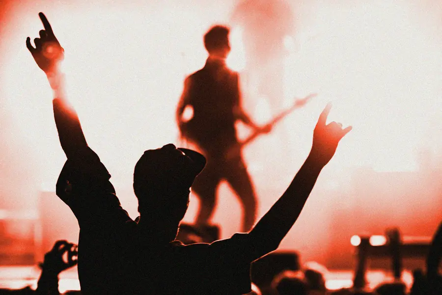
Vendredi 2 Rock
- Lou Garance B
- Dalle Brute B
- Brise-Glace A
- Monique Ferraille C
avant l'ouverture des portes
41 concerts de rock, de rap et d'électro dans les halles couvertes d'une ancienne usine d'armes. les trois nuits, tram jusqu'à 4 h 30.
Pendant plus d'un siècle, ces halles ont fabriqué des fusils. Trois nuits par an, on y monte le son. Le toit tient, les murs aussi.

Suite de l'affiche le 15 avril : 29 noms à venir.

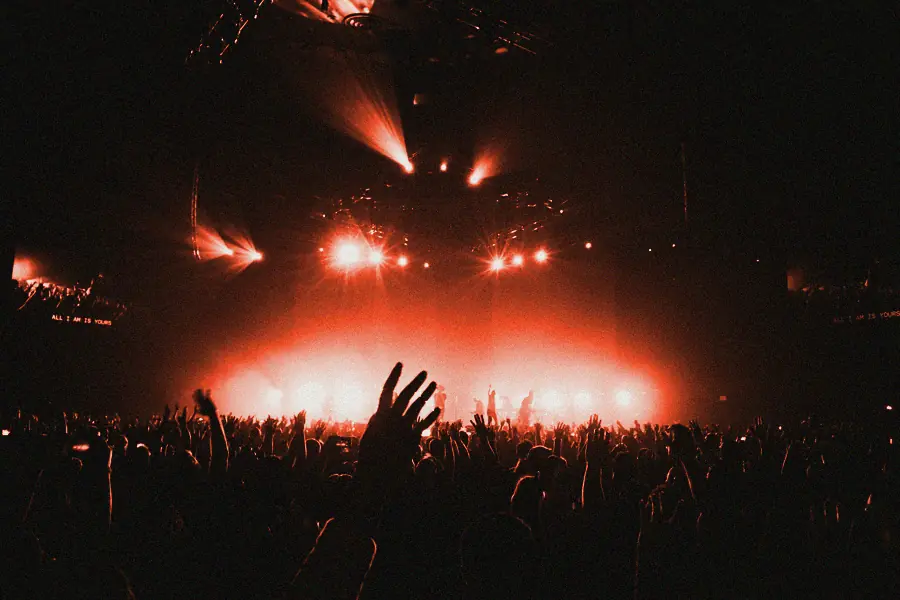
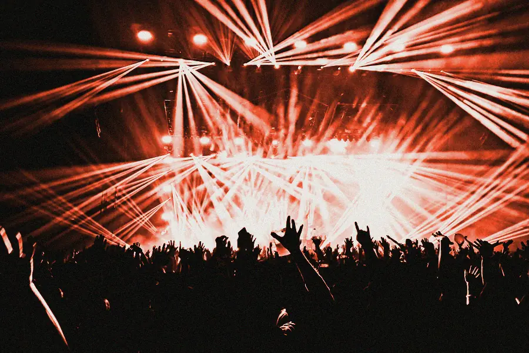
Glissez ou défilez : un extrait par artiste.
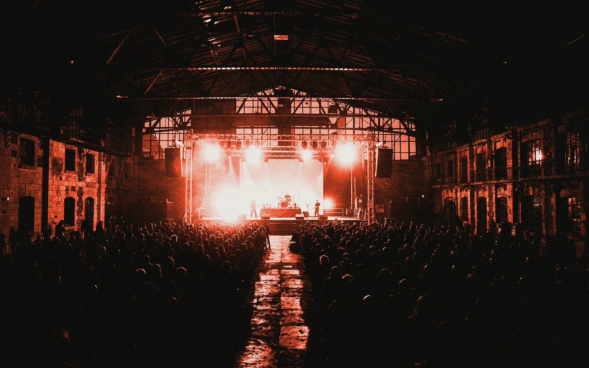
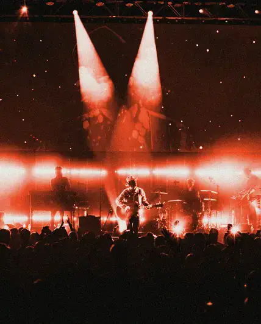
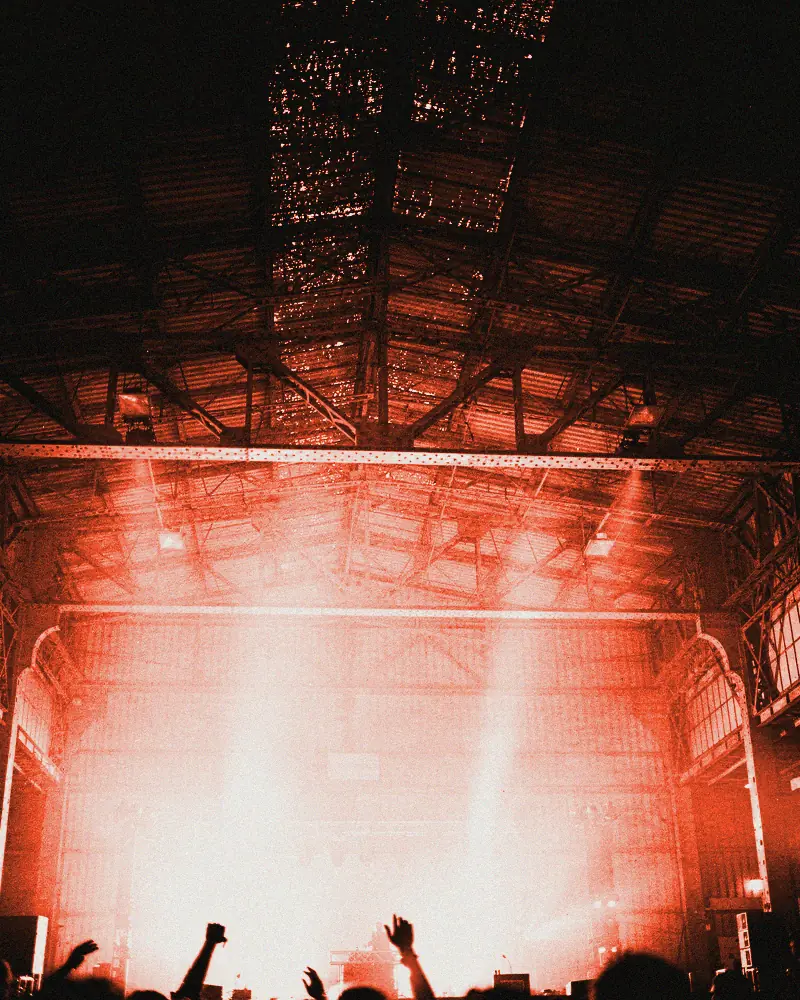
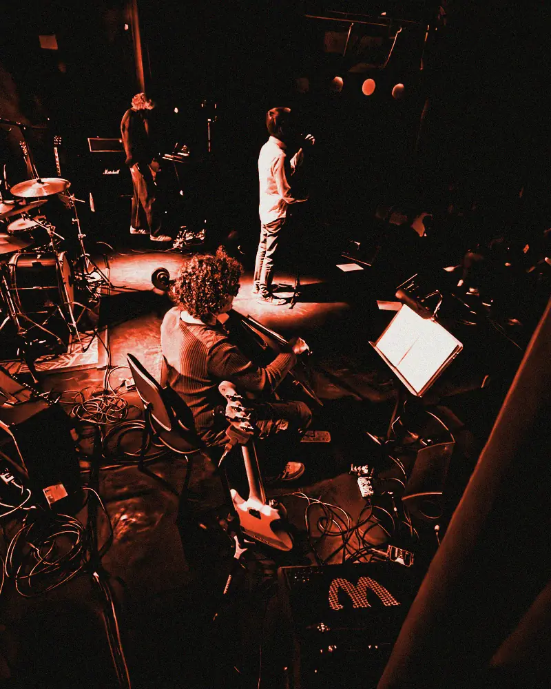
Une association loi 1901, à sa quatrième édition. Trois salariés à l'année ; en juillet, 180 bénévoles aux entrées, aux bars et sur les plateaux.
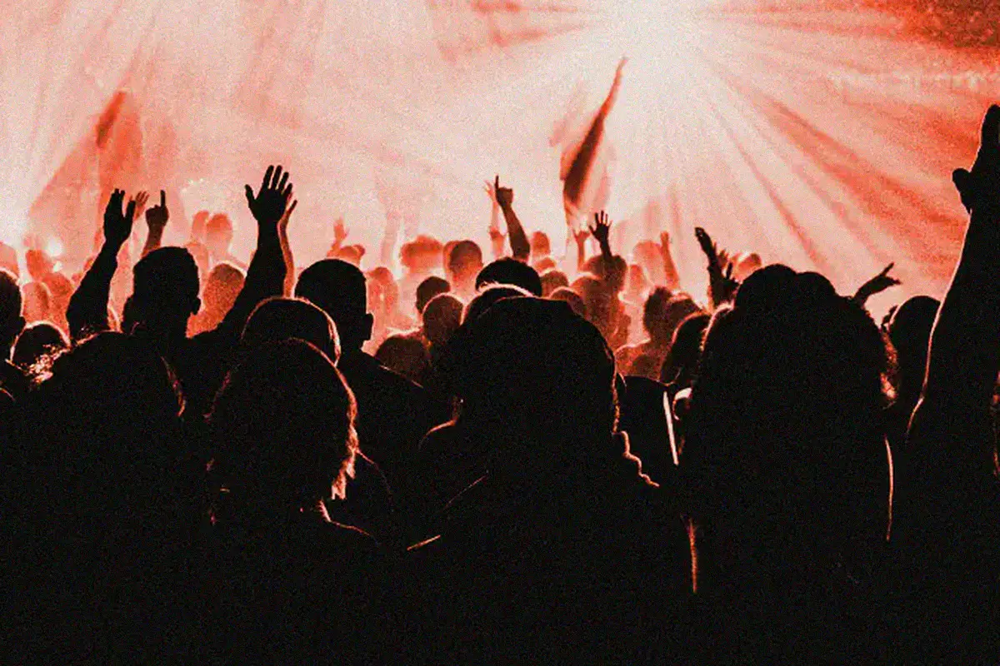
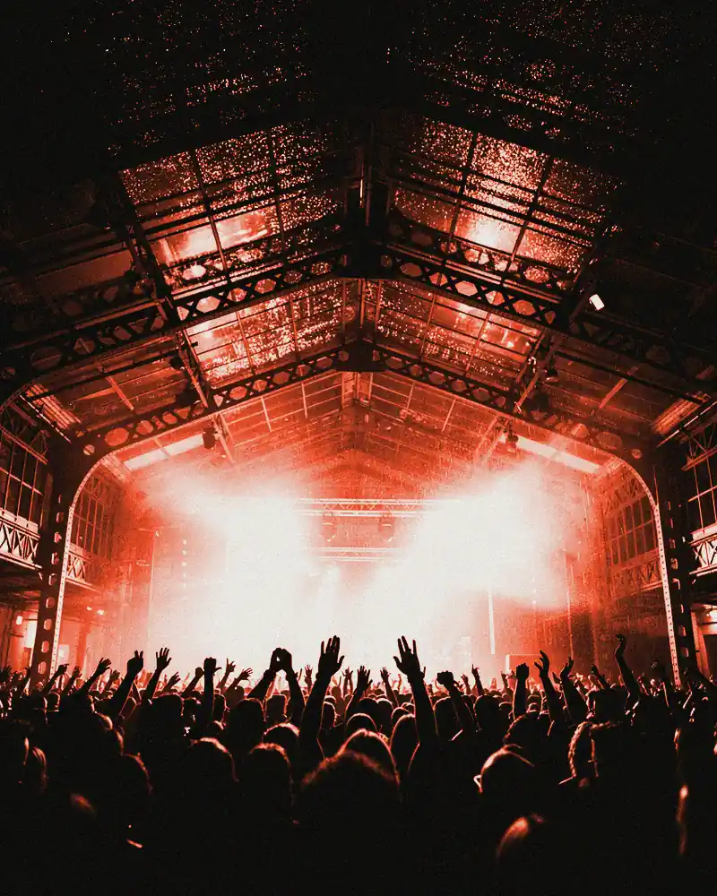
« On a dansé pendant l'orage sans le savoir. »
« Le tram de 4 h 30 était plein, et à l'heure. »
« Le seul festival où mon fauteuil ne s'enlise pas. »
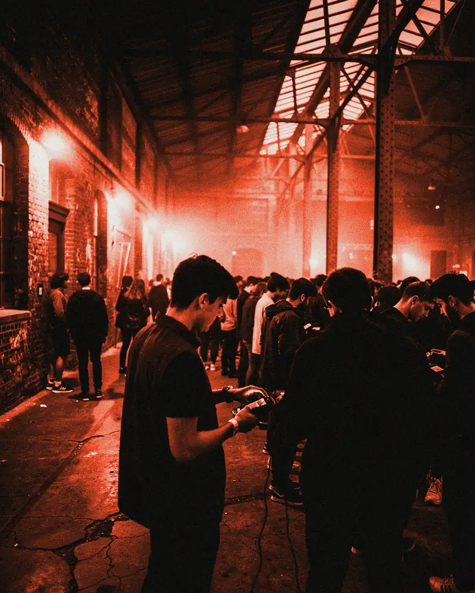
Total
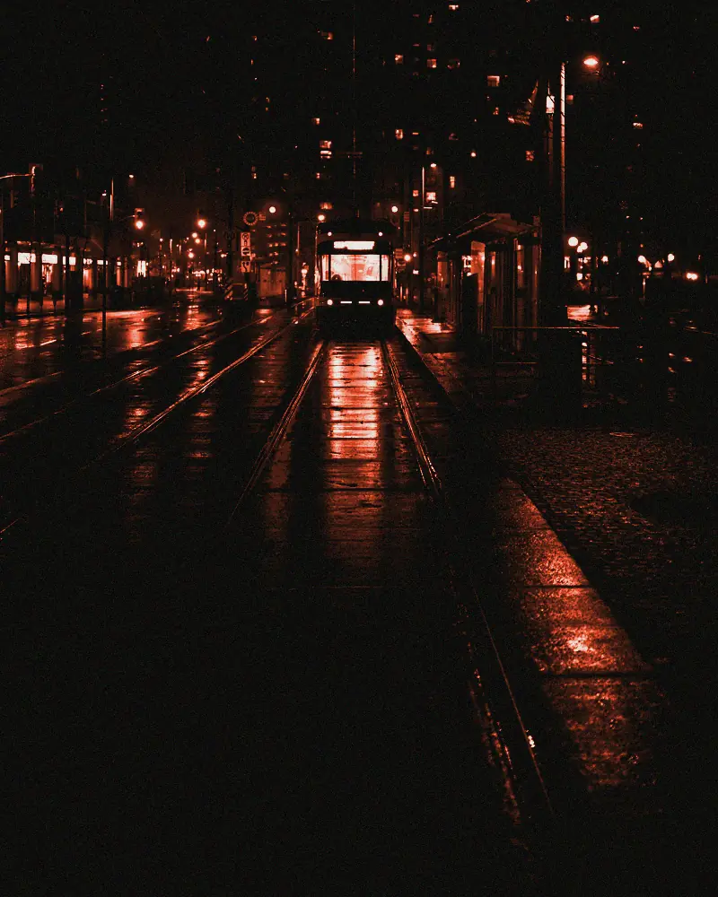
Les trois halles, trois nuits, de 19 h à 5 h.
Sur la billetterie du festival, gratuitement, jusqu'au 1er juillet.
Oui, avec un adulte, jusqu'à 1 h du matin.
Sans frais de dossier. Revente gratuite. Tram jusqu'à 4 h 30.
Prendre mon pass —